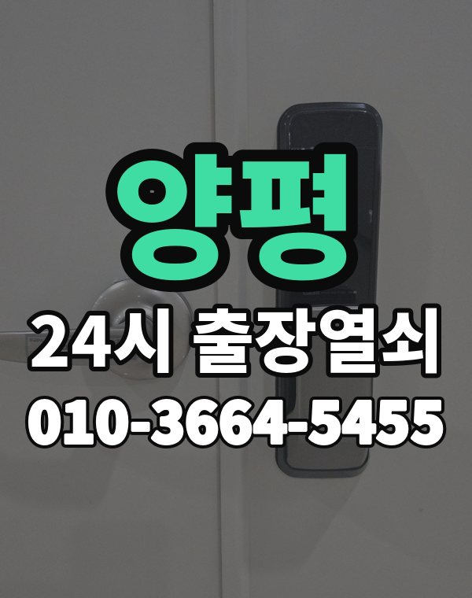

양평은 이런 곳입니다
양평은 양평읍 아파트와 서종, 강하, 용문면 전원주택과 펜션이 많은 지역입니다.
별장처럼 가끔 쓰는 집은 배터리가 다 돼서 문이 안 열리는 경우가 많습니다.

양평군 출장 가는 동네
- 양평읍
- 강상면
- 강하면
- 양서면
- 옥천면
- 서종면
- 용문면
- 지평면
양평읍 출장열쇠, 강상면 열쇠집처럼 동네 이름으로 찾으셨어도 같은 곳입니다.
적혀 있지 않은 동네도 양평군 안이면 다 갑니다.
양평 출장 작업 종류
양평 출장 부르실 때
거리가 먼 곳이 많아 정확한 주소와 들어오는 길을 같이 알려주세요.
도착 시간을 먼저 말씀드립니다.
양평역, 용문역, 아신역 근처라고 말씀해 주셔도 위치 잡기가 쉬워집니다.
가까운 역이나 큰 건물, 단지 이름을 같이 알려주세요.
- 주소와 건물 이름 (아파트면 동, 호수)
- 문 종류, 번호판이 켜지는지
- 사시는 걸 확인할 신분증이나 우편물이 있는지
전화부터 작업까지 순서는 이용안내에 적어 두었습니다.
양평 출장열쇠 관련 글
- 양평 강하면 습기와 결로 때문에 도어락이 오작동할 때 점검 순서
- 양평 강상면 연휴·여행 다녀온 뒤 현관문이 안 열릴 때 확인할 것
- 양평 지평면 부모님 댁 현관문이 안 열린다고 연락 왔을 때 대처법
- 양평 옥천면 열쇠가 안 돌아가거나 열쇠구멍이 뻑뻑할 때 먼저 할 일
- 양평 서종면 여름 무더위와 장마에 현관문이 뻑뻑하거나 안 닫힐 때
- 양평 양평읍 상가·사무실 출입문이 안 열릴 때 출장열쇠 부르기 전 확인할 것
- 양평 양서면 스마트 도어락 고를 때 알아둘 점과 설치 전 확인할 것
- 양평 용문면 이사 들어오고 나갈 때 도어락과 열쇠 정리하는 순서
양평 출장열쇠 자주 묻는 질문
양평 어디까지 출장 오시나요?
양평읍, 강상면, 강하면, 양서면, 옥천면, 서종면 등 양평군 전 지역 갑니다. 목록에 없는 동네도 전화로 위치만 알려주시면 됩니다.
양평 늦은 시간 출장도 되나요?
24시간 전화 받고 출동합니다. 위치를 알려주시면 도착 예상 시간을 먼저 말씀드립니다.
끝내 못 열면 돈은 어떻게 되나요?
열지 못하면 비용은 없습니다. 작업 전에 금액을 듣고 정하시면 됩니다.
집주인이 아니어도 열어 주나요?
거주하시는 분인지 확인한 뒤 엽니다. 신분증이 집 안에 있으면 관리사무소 확인도 됩니다.
양평에서 도어락 고장도 봐주시나요?
네, 합니다. 문에 맞는 제품인지 보고, 고칠 수 있으면 수리를 먼저 권합니다.